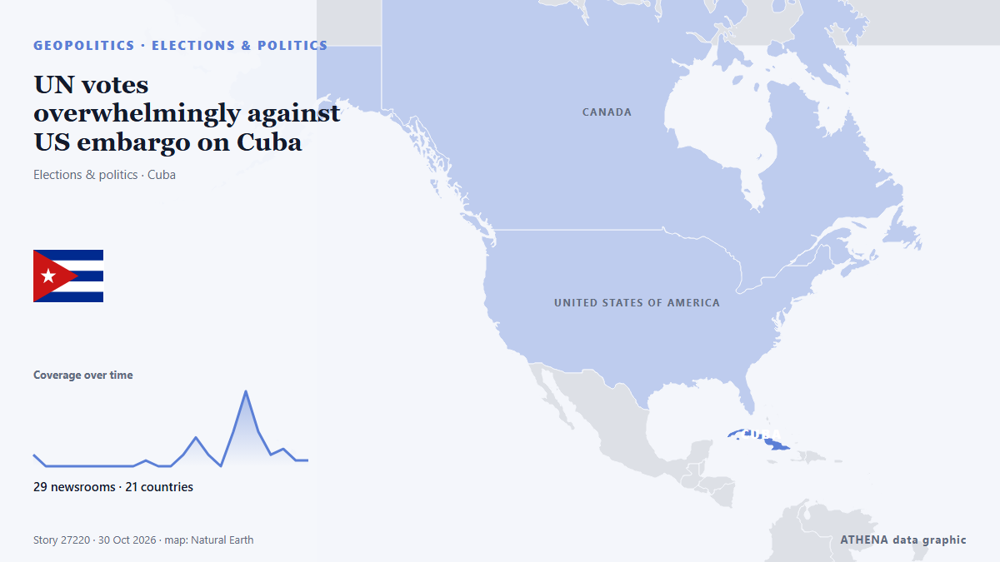

UN votes overwhelmingly against US embargo on Cuba

The UN General Assembly on Wednesday adopted a resolution calling for an end to the decades-old US embargo on Cuba. von CGTN (World)
Unabhängig gemeldet von 29 Medien in 21 Ländern seit dem 24. Okt., zuerst von Global News (World); die Berichterstattung flaut ab. ATHENA stuft das Risiko als mäßig ein (3.4/10), vor allem wegen der Schwere des beschriebenen Schadens und seiner geografischen und sektoralen Reichweite. Die Konfidenz liegt bei 92 % (hoch): 29 Medien bestätigen es unabhängig, bei einer mittleren Verlässlichkeit der Quellen von 78 %. Medien nach Land: Brasilien (5), Türkei (4), China (4). Berichterstattung: 24. Okt. bis 29. Okt., 121 Stunden.
Warum es wichtig ist: Sicherheits- und diplomatische Entwicklungen können Bündnisse, Handel und Märkte weit über die direkt beteiligten Länder hinaus verschieben.
Was sich geändert hat: 9 neue Berichte von 9 Redaktionen in den 24 Stunden bis 30. Okt..
Schlagzeilen werden auf Englisch angezeigt, wie veröffentlicht.
Auf einen Blick
Ausgewählt, bewertet und geschrieben nach der veröffentlichten Methodik von ATHENA. Kein Redakteur greift in einzelne Ereignisse ein. So entsteht ATHENA ›
| 24 Oct 11:37 UTC | 2 |
|---|---|
| 24 Oct 17:37 UTC | 0 |
| 24 Oct 23:37 UTC | 0 |
| 25 Oct 05:37 UTC | 0 |
| 25 Oct 11:37 UTC | 0 |
| 25 Oct 17:37 UTC | 0 |
| 25 Oct 23:37 UTC | 0 |
| 26 Oct 05:37 UTC | 0 |
| 26 Oct 11:37 UTC | 0 |
| 26 Oct 17:37 UTC | 1 |
| 26 Oct 23:37 UTC | 0 |
| 27 Oct 05:37 UTC | 0 |
| 27 Oct 11:37 UTC | 2 |
| 27 Oct 17:37 UTC | 5 |
| 27 Oct 23:37 UTC | 2 |
| 28 Oct 05:37 UTC | 0 |
| 28 Oct 11:37 UTC | 6 |
| 28 Oct 17:37 UTC | 13 |
| 28 Oct 23:37 UTC | 6 |
| 29 Oct 05:37 UTC | 2 |
| 29 Oct 11:37 UTC | 3 |
| 29 Oct 17:37 UTC | 1 |
| 29 Oct 23:37 UTC | 1 |
| 24 Oct 12:54 UTC | 3.9 |
|---|---|
| 26 Oct 20:43 UTC | 2.5 |
| 27 Oct 19:16 UTC | 1.3 |
| 27 Oct 19:26 UTC | 3.9 |
| 28 Oct 16:46 UTC | 4.3 |
| 30 Oct 04:00 UTC | 3.4 |
Warum diese Zahlen
Bedeutung
Risiko
Konfidenz
Die Berichterstattung – wer berichtete, und wann
Schlagzeile wie veröffentlicht · öffnet das Original- Global News (World) · KanadaCuban ambassadors ask Canada to renew rejection of U.S. embargo and fuel blockade
- The Globe and Mail · KanadaCuban envoy asks Canada to renew rejection of U.S. blockade
- Anadolu Agency (English) · TürkeiCuba to present UN resolution demanding end to US embargo
- UN News · Vereinigte StaatenGeneral Assembly weighs US embargo against Cuba ahead of 34th vote
- Anadolu Agency (English) · TürkeiUS, Cuba clash at UN General Assembly on trade embargo
- Türkiye Today · TürkeiUS and Cuban diplomats trade insults on UN floor before embargo vote
- The Rio Times · BrasilienUS Urges UN to Vote Down Cuba Embargo Text
- Breaking Belize News · BelizeInternational News: US and Cuban officials clash during UN debate over Economic embargo
- The National · Vereinigte Arabische EmirateUS and Cuban envoys in shouting match during UN embargo debate
- Free Malaysia Today · MalaysiaUS, Cuba shouting match derails debate at UN
- The Rio Times · BrasilienUS Envoy and Cuban Minister Clash at UN
- Al Jazeera English · Katar‘This is America’: US envoy scolds Cuban diplomat at UN
- UN News · Vereinigte StaatenBacking for UN call to end Cuba embargo falls to 20-year low
- Anadolu Agency (English) · TürkeiUN General Assembly backs resolution calling for end to US embargo on Cuba
- The Independent · Vereinigtes KönigreichSome countries cave to Trump and sit out of UN vote over Cuba embargo for first time in 34 years
- The Rio Times · BrasilienCuba UN Vote Drops to 130 Yes
- The Straits Times · SingapurUS sways more countries to oppose UN resolution condemning its Cuba embargo
- The Straits Times · SingapurCuba wins UN vote against US embargo with weakest backing in 30 years
- The Rio Times · BrasilienCuba Embargo Vote Plunges 35 to 130
- eNCA · SüdafrikaCuba wins UN vote against US embargo with weakest backing in 30 years
- Jamaica Observer · JamaikaCuba wins UN vote against US embargo with weakest backing in 30 years
- SABC News · SüdafrikaUN General Assembly backs call to end US embargo on Cuba
- Trinidad Express · Trinidad und TobagoT&T breaks with 30+ year record, votes against Cuba embargo resolution
- Al Jazeera English · KatarUN votes to condemn embargo of Cuba despite US lobbying push
- CBC News · KanadaMost nations at UN vote to condemn U.S. embargo on Cuba
- Free Malaysia Today · MalaysiaCuba wins UN vote against US embargo
- Euronews English · FrankreichSupport for UN vote to end US embargo on Cuba falls to 30-year low
- Bangkok Post — page reader · ThailandCuba wins UN vote against US embargo with weakest backing in 30 years
- PBS NewsHour World · Vereinigte StaatenUN condemns U.S. economic embargo of Cuba though more nations sit out amid Trump push
- Xinhua (English) — page reader · ChinaCuba hails "victory" of UN vote to lift U.S. embargo
- Trinidad Express · Trinidad und TobagoKamla invokes democracy to defend break with Cuba embargo stance
- Xinhua (English) — page reader · ChinaUN votes overwhelmingly against U.S. embargo on Cuba
- CGTN (World) · ChinaUN votes overwhelmingly against US embargo on Cuba
- FBC News · FidschiUS sways more countries to oppose UN resolution
- Antigua Observer · Antigua und BarbudaAntigua and Barbuda records no vote on Cuba embargo despite past solidarity
- APP (Associated Press of Pakistan) · PakistanUN General Assembly slams Cuba blockade, after sharp clash between US & Cuban envoys
- Club of Mozambique · MosambikUN condemns US economic embargo of Cuba though more nations sit out after Trump administration push
- Xinhua (English) — page reader · ChinaU.S. embargo on Cuba draws overwhelming UN condemnation for 34th straight year
- News of Bahrain · BahrainUN Support for Cuba Embargo Resolution Falls
- The Rio Times · BrasilienArgentina Again Backs US Embargo on Cuba